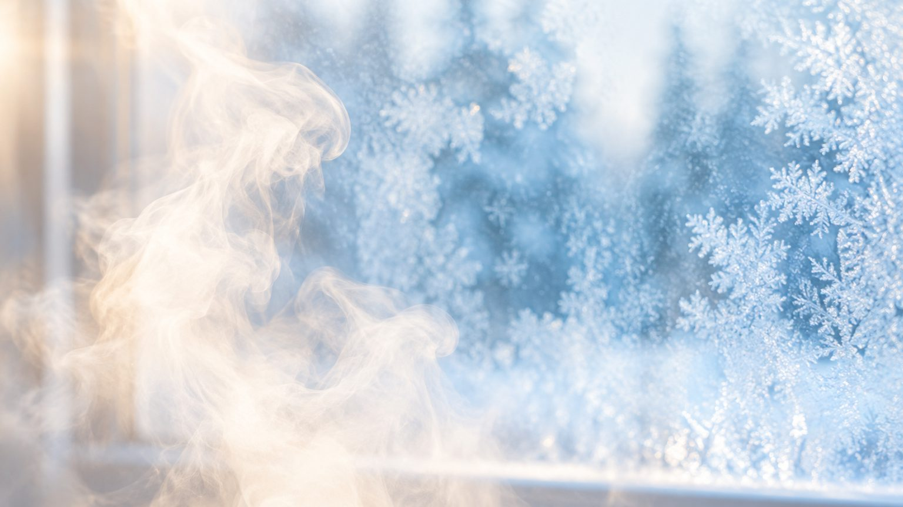

Bathroom safety
Winter bathroom safety for older people and heat shock

In short
To protect older people from winter heat shock, warm the changing room and bathroom before bathing, keep water at 41°C or below and soaks to about 10 minutes, stand up slowly holding a fixed grab bar, and tell someone at home. A seated shower in a heated room avoids long hot soaks and high tub edges.
Japan's Consumer Affairs Agency repeated its year-end warning about accidents among older people in December 2025, and the same advice applies again as heating season starts this month. Citing the health ministry's 2024 vital statistics, the agency notice reports 7,776 deaths from drowning in or falling into a bathtub, of which 7,363, about 95%, were people aged 65 or older. It names two causes in winter: sharp swings in blood pressure when someone moves from a heated room into a cold changing room or bathroom, and loss of consciousness after a long soak in hot water. Tottori Prefecture's health guidance separates the two clearly, calling the first heat shock and the second a form of heatstroke, and marks December to February as the peak months.
Why does winter bathing need its own plan?
Most heat shock advice is written as personal rules for the bather: keep the water cool enough, keep the soak short, stand up slowly. Those rules matter, and we repeat them below. What gets less attention is the room and the routine around the person. Who warms the bathroom before the bath? Where does an older person sit while they undress? What do they hold when they rise from the water with blood pressure dropping? How does a son, daughter or care worker help without standing in a cold, wet room for twenty minutes?
For families these are daily decisions. For distributors, renovation firms and care operators they are product and layout decisions, and they are easier to get right in autumn than after an emergency call in January.
What does a risky winter bath look like?
Picture a woman in her early eighties who lives with her son's family in a detached house. The living room is heated all evening. The changing room and tiled bathroom have no heating and feel much colder. She undresses standing up, steps over a high tub edge, and soaks in very hot water for longer than she should, because it is the warmest she has felt all day. When she stands up quickly, she feels dizzy and reaches for the tap, because there is nothing else to hold. Her family are watching television and do not know how long she has been in the bath.
None of these steps is unusual. Together they line up almost every risk the agency describes: the temperature gap, the long hot soak, the sudden rise and no one checking.
How do you lower heat shock risk before, during and after a bath?
The Consumer Affairs Agency and local health departments give consistent advice. Put simply:
- Warm the changing room and bathroom first. The aim is to shrink the gap between the living room and the bathroom. A room thermometer helps you check rather than guess.
- Drink some water before bathing, and avoid bathing straight after a meal, after alcohol or after taking medication.
- Tell someone at home. The bather should let the household know before going in, and family members should check in during the bath.
- Keep the water at 41°C or below and the soak to about 10 minutes. A bath thermometer and a kitchen timer are cheap ways to stick to this.
- Stand up slowly, holding something fixed and solid, not a towel rail or the tap.
- If the bather feels faint, drain the tub. The agency's advice is to pull the plug before losing consciousness, so the water level falls.
Every one of these steps is easier when the room is set up for it. That is where equipment choices come in.
Which bathroom changes help most in winter?
| Change | Risk it addresses | What to check |
|---|---|---|
| Fixed bathroom heater | Cold bathroom and changing room, the temperature gap behind heat shock | Heats before the bath starts; suits the room size and local voltage |
| Seated shower | Long hot soaks and stepping over a tub edge | Seat load rating, water pressure range, folding armrests for transfers |
| Wall-mounted folding seat | Undressing or drying while standing on a wet floor | Folds away when not needed; anti-slip seat surface |
| Grab bars by the tub, shower and door | Dizziness on standing; slips on a wet floor | Fixed into solid wall; grip that is not cold or slippery to the hand |
| Night-visible or luminous bars | Night-time toilet trips into a dark, cold room | Whether the glow needs charging by light first |
| Presence sensor or call button | No one noticing a problem in time | Who receives the alert and how quickly |
Tottori's guidance lists handrails in the bathroom among its basic precautions. Our guide to grab bar placement covers heights and positions in detail.
Is a seated shower a safer winter option than a soak?
For many households, the evening soak is the point of bathing, and nobody should be told to give it up. But the two risks the agency names are closely tied to the tub itself: stepping in and out, sitting in hot water for a long time, and rising quickly from a low position. A seated shower changes each of those. The user sits at a normal chair height, warm water runs over the body without immersion, and there is no deep water to slip under if they feel unwell.
That makes a seated shower a sensible option for the coldest weeks, for people whose doctor has warned them about blood pressure, or for anyone who already needs help getting in and out of the tub. It still needs a warm room. A shower in a cold bathroom only moves the problem. We compare seated showers with simple shower chairs in this comparison.
What should carers look for?
- Armrests that fold up, so a carer can help with a side transfer from a wheelchair.
- Water outlets that reach the shoulders and back, so the user stays warm while seated.
- Controls the carer can reach without standing in the spray.
- A clear stated maximum load, checked against the user's weight.
Which products support a safer winter routine?
MULAN, a Foshan factory making aging-friendly bathroom products, builds a seated shower designed for exactly this kind of winter bathing. The user can sit or stand; eight adjustable outlets on the shower arms wrap the body in water, and a shoulder outlet sprays across the back. The armrests fold away for transfers. The 2025 product manual lists a maximum load of 110 kg and a flow of no more than 9 litres per minute at a working pressure of 0.1 to 0.5 MPa. For a full room plan, the bathroom package combines the seated shower with a smart bathroom heater, a presence sensor, an SOS call button and grab bars.
Importers and care operators planning for Japan should confirm voltage, local certification needs and order terms directly with the factory on WhatsApp (+86 136 6003 9128) before quoting to customers.
What is the short version for this winter?
Heat shock is mostly about temperature gaps and long hot soaks, and both can be reduced. Warm the bathroom first, keep baths cooler and shorter, give the older person something solid to hold and somewhere to sit, and make sure someone knows they are bathing. If you supply or specify bathrooms for older people, autumn is the time to check whether each room makes those habits easy.